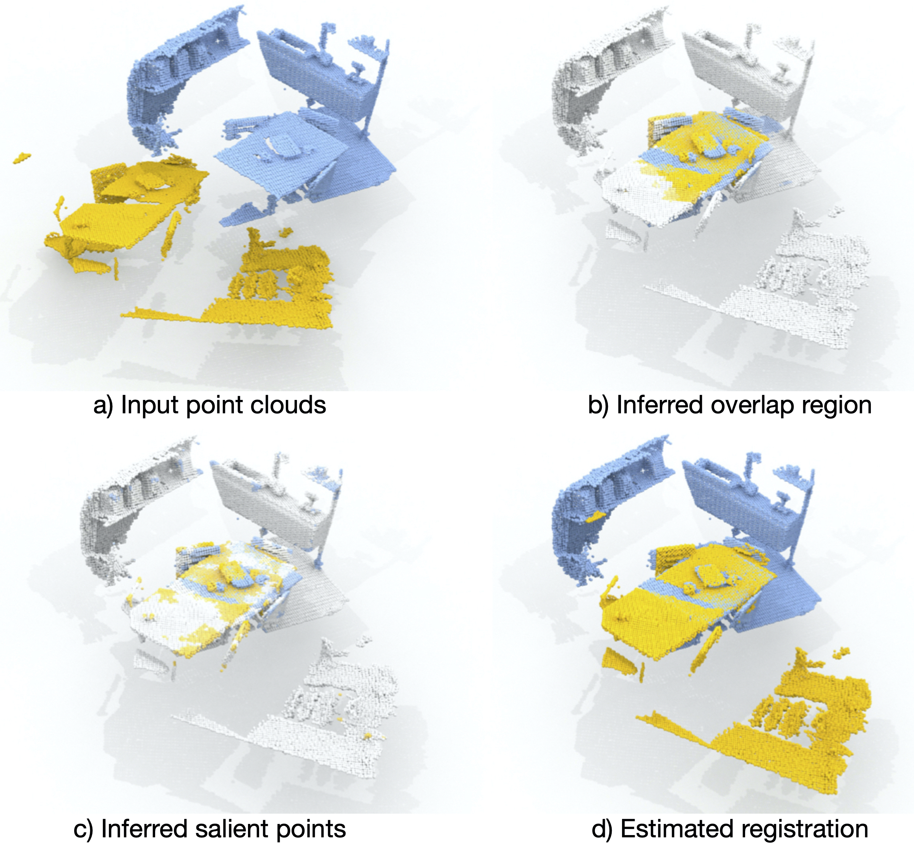

Our method consumes two overlapping point clouds and estimates overlap heatmap, matchability heatmap, and point-wise features. The combined heatmap can be used to guide interest point sampling and to enable robust regsitration under low-overlap regime.
Abstract
We introduce PREDATOR, a model for pairwise point-cloud registration with deep attention to the overlap region. Different from previous work, our model is specifically designed to handle (also)
point-cloud pairs with low overlap. Its key novelty is an overlap-attention block for early information exchange between the latent encodings of the two point clouds. In this way the subsequent decoding of the latent representations
into per-point features is conditioned on the respective other point cloud, and thus can predict which points are not only salient, but also lie in the overlap region between the two point clouds. The ability to focus on points that
are relevant for matching greatly improves performance: PREDATOR raises the rate of successful registrations by more than 20% in the low-overlap scenario, and also sets a new state of the art for the 3DMatch benchmark with 89%
registration recall.

Qualitative results
We evaluate PREDATOR and justify our design choices on real scan data, using 3DMatch and 3DLoMatch. Additionally, we compare PREDATOR to direct registration methods on the synthetic, object-centric ModelNet40 and also
showcase the effectiveness of PREDATOR on outdoor real scan odometryKITTI.
More qualitative results on 3DMatch
Citation
@inproceedings{predator,
title={PREDATOR: Registration of 3D Point Clouds with Low Overlap},
author={Shengyu Huang and Zan Gojcic and Mikhail Usvyatsov and Andreas Wieser, Konrad Schindler},
booktitle={IEEE Conference on Computer Vision and Pattern Recognition, CVPR},
year={2021}
}
}
{kind=link}